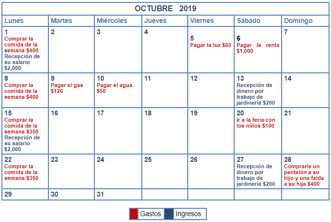

Tema 3: Aprendiendo a crear y modificar nuestro presupuesto
Ahora que ya sabemos qué es un presupuesto, qué son los ingresos y los gastos y cómo se clasifican, vamos a ver cómo puedes realizar tu propio presupuesto.
Lo primero que debes realizar es una lista de las actividades que llevas a cabo en tu vida diaria con tu familia. Esto lo puedes hacer día por día, semana por semana, mes a mes, hasta llegar a definir lo que haces cada año, así podrás definir con más precisión la cantidad de dinero que vas a gastar y ahorrar. Esto es muy sencillo, veamos cómo lo hizo Vicente.
Ejemplo de las actividades de Vicente Santos en el mes de octubre.
Vicente y su familia anotaron todos los gastos que va a tener en el mes de octubre. Primero, identificó los gastos fijos, recordemos que estos gastos son los que siempre realizas. Después, identificó los gastos variables, que son los gastos que no se presentan con seguridad o que representen algún imprevisto.
Después, identificó tanto sus ingresos fijos, como los variables.
Vas a notar que los gastos variables pueden aparecer con mayor frecuencia los sábados y domingos.
